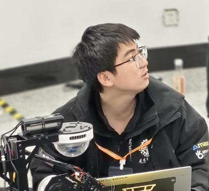
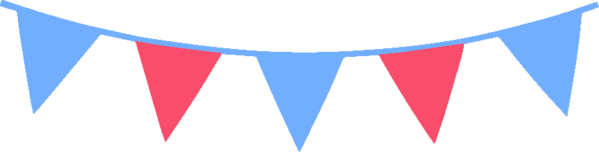
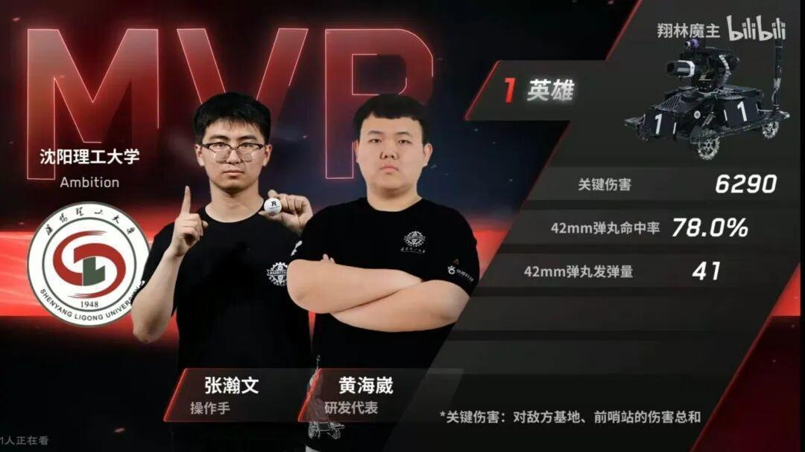
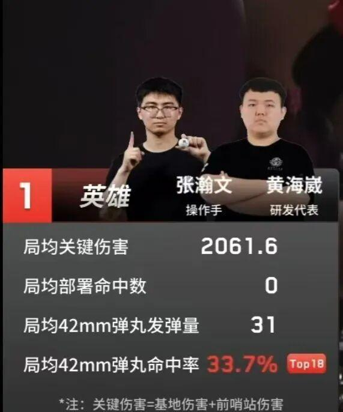
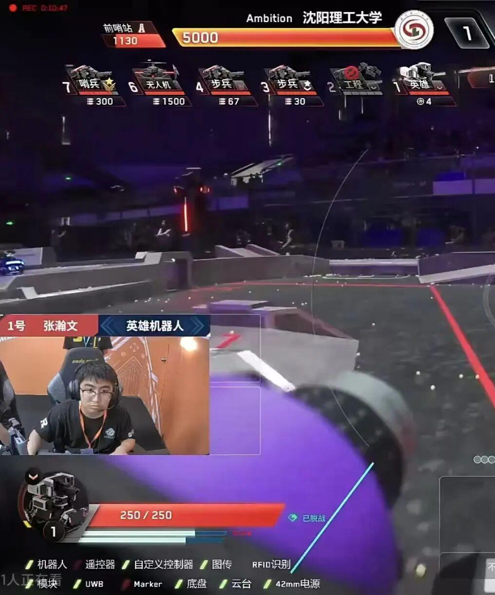

RMer专访|波澜不惊，迎难而上——张瀚文

RMer专访






25赛季电控组组长——张瀚文
个人简介
就读于22级机械电子工程专业，23年赛季为梯队队员，24赛季成为正式队员，25赛季成为电控组组长。
你加入战队电控组的契机是什么？
是20级的电控组长在招生群里边创建了一个群聊，由于当时对这一类事情也比较感兴趣，然后就加入到群聊里边。聊了一段时间之后发现自己对电控组比较感兴趣，于是最后选择了电控组。
哪一个组别与电控组的联系是最密切的？
前期最密切的肯定是机械组，由于更多的时间是在调试基础功能，然后常常会一起讨论走线的位置以及其他东西。
你认为电控组组内以及整个团队有什么可以改进的地方？
对于组内来说，需要统一规范各式代码编写。对整个团队来说，整体的规章制度也需要完善。
请用一句话来形容你在电控组的生活。
一边调参一边吐槽电控，一边调参一边吐槽视觉和一边调参一边吐槽机械。



张瀚文，在25赛季对抗赛中担任英雄操作手，比赛中打出较高命中率，为Ambition战队胜利作出巨大贡献。
近期对抗赛有没有遇到什么突发情况？
由于第一天场地漏水，官方为了排除问题关闭了空调，结果PC热关机了。在打国防科技大学的第三局时，英雄机器人的麦轮掉了一个，刘猛老师一路狂奔到备场区拿M5六角扳手来抢修。
想对帮助过我们的队伍们说什么？
首先，非常感谢中国科学技术大学的渔网，西安交通大学的螺丝胶，南航金城的M5*55的螺丝，西南石油提供的前哨站，沈阳航空航天大学提供的兑换站，还有中南大学提供的调试场地。正因有你们这样的对手，才让比赛不只是比赛。
感谢电控组组长张瀚文接受本次采访
end
文案|大祁晚陈
素材|Ambition运营组
审核|青唐三月